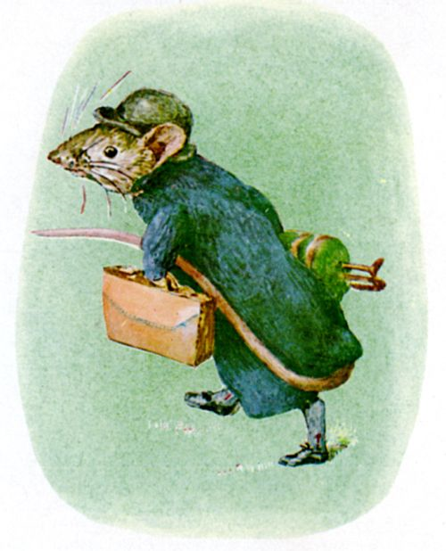
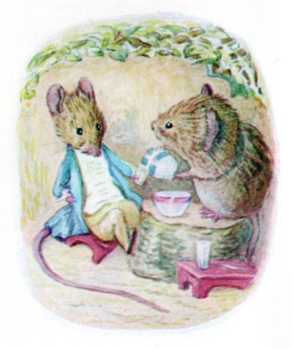
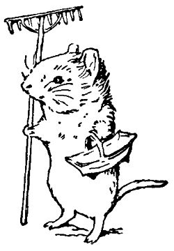
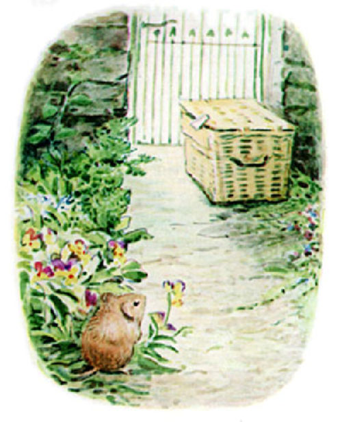
まちねずジョニーが うまれたのは とだなのなかでした。 かごいりチミーの うまれたところは にわでした。 かごいりチミーは いなかの こねずみでしたが、 あるとき てちがいで あみかごに いれられ まちまで いってしまって。 にわの もちぬしが しゅうに １ど やさいを まちへ はこんでもらっていまして、 それで いつも おおきな あみかごに つめるのです。
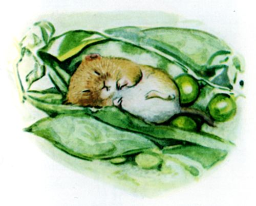
そのひとが にわの いりぐちのわきに かごを おいておくと、 はこびやさんが とおりすがりに ひろっていく というわけで。 そこへ かごいりチミーが かごにあいた あなから なかへ はいりこみ、 とりあえず おまめを たべますと ―― かごいりチミー ぐっすり ねいってしまいまして。
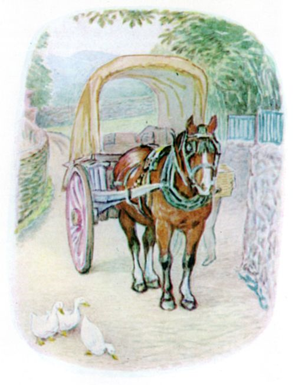
びくっとして めを さますと、 かごが ちょうど はこびやさんの にぐるまに つまれるところで。 そのあと いきなり がたっと ゆれて、 ぱかぱかという うまの ひづめの おと。 ほかにも にもつが なげいれられて。 ながい ながい みちのりを ―― がたん ―― ごとん ―― がたごとっ！ かごいりチミーは ごったがえす やさいのなかで ふるえていました。
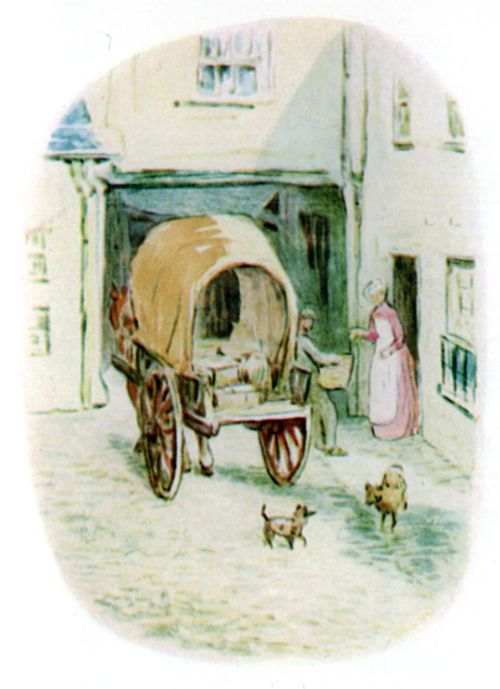
やがて にぐるまは １けんの いえのわきで とまり、 ここで かごは おろされ はこびこまれ、 したに おかれます。 そのいえの すいじがかりは はこびやさんに はくどうの コインを １まい わたしました。 うらぐちが ばたんと しめられると にぐるまは ごとごと はなれていきます。 けれども しずかに なるわけでは なく、 まるで なんびゃくもの にぐるまが とっているみたい といいますか。 いぬは ほえますし、 おとこのこは あつまって とおりで くちぶえを ふきますし、 すいじがかりも おおわらいして、 すみこみの おてつだいだって かいだんを かけのぼったり おりたり、 それから カナリアまで ぴーぴー ゆげを ふくみたいに うたうのです。
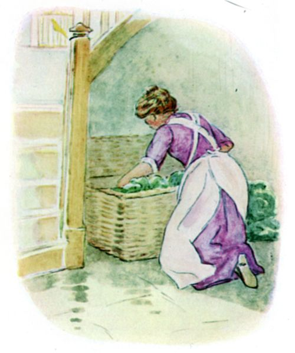
かごいりチミーは これまで いなかの にわでしか くらしたことが なかったので、 もう しぬほど こわくって。 するといきなり すいじがかりが かごを あけて やさいを とりだしていきます。 そこを ぴょーんと でていく こわがりの かごいりチミー。
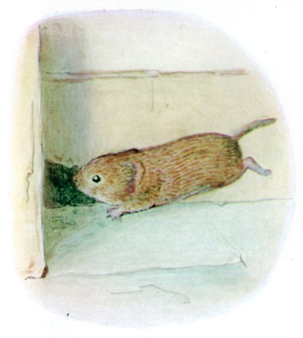
とびあがった すいじがかりは いすに しりもち かなきりごえ。「ねずみ！ ねずみよ！ ねこを よんで！ ひかきぼうを ちょうだい、 セアラ！」 かごいりチミーが ひかきぼうを てにした セアラなんて まつわけ ありません。 すそいたの よこを はしりに はしって、 そのうち ちいさな あなのところまで きたので、 そこへ ぴゅっと すべりこみました。
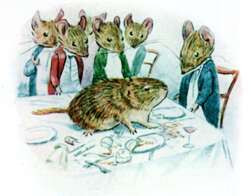
すると あしはんぶんの たかさだけ おっこちて、 つっこんだのが ねずみの ディナーパーティの まっただなか、 ３つも グラスを わってしまいます ――「いったい なにものかね。」と といつめるのは まちねずジョニー。 とはいえ おどろいて こえを あらげたのは はじめだけで、 すぐさま また とりすまして。
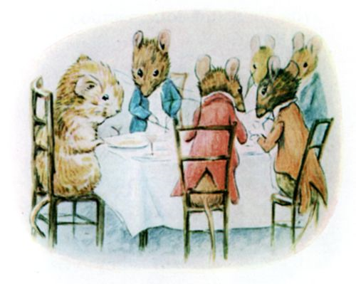
とにかく あらたまって かごいりチミーを この あつまりに まねきいれました。 そこにいた ねずみは ぜんぶで １０ぴき、 みんな しっぽが ながく、 しろい ネクタイを しめています。 かごいりチミーの しっぽと きたら ちっぽけな ものですからね。 まちねずジョニーを はじめ そのなかまたちも そのことに きづいたのですが、 みんな そだちが いいので、 ひとに とやかくは いわないのです。 ただ ひとりだけ かごいりチミーに きいてしまった ねずみが いて。 わなに かかったことは？ って。
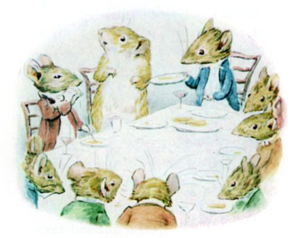
ディナーは ８しな あって、 やまもりは なかったのですが、 ほんとに おじょうひんな ものでした。 どの おさらも かごいりチミーの しらないものばかりで、 くちを つけるのも ちょっと ためらうくらいなのですが、 ただ おなかが ぺこぺこでしたし、 みんなの ふるまいを まねしなくっちゃって おもいまして。 でも たえず うえで どたばたしてるので ひどく きが ちってしまって、 おさらを おっことしてしまいます。「きにするでない。 どうせ この さら、 われらの ものでない。」と いうのは ジョニーでした。
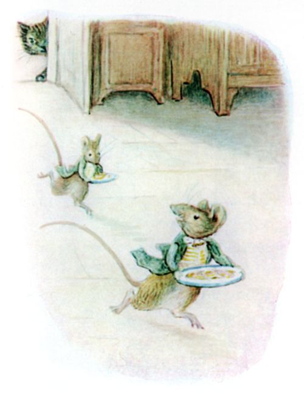
「わかいのは なにゆえ デザートを もって もどってこん！」 というのも つまり ２ひきの わかねずみが みんなの はいぜんがかりで、 コースの あいまに うえの だいどころへ あさりに いくのです。 そのうち なんども ころびながら もどってきて きゃっきゃ あはは。 かごいりチミーは はっと きづいて こわくなります。 じつは ２ひきとも ねこに おわれていたのですから。 おなかすいたも どこへやら、 あたまが くらくらして。 そこへ「ゼリーは いかが。」と まちねずジョニー。
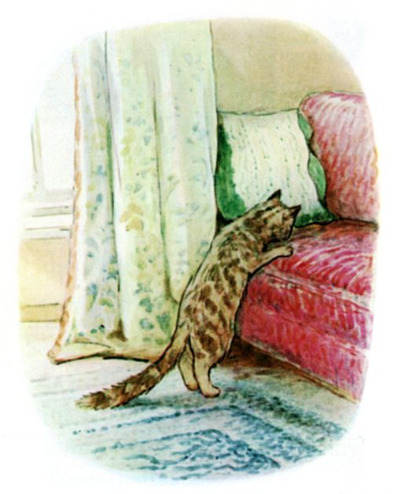
「いらぬか。 そろそろ ベッドに つきたいかね？ では おみせしよう、 じつに ここちよい ソファまくらで あるぞ。」
その ソファまくらには なかへ はいる あなが あいているのです。 まちねずジョニーは いちばんの ねどこだと こころの そこから すすめまして、 おきゃくさま せんようの とっておきなのでした。 ところが ソファから ねこの においがして。 かごいりチミーは だんろのしたで みじめに よるを こしたほうが まだましだと おもいました。
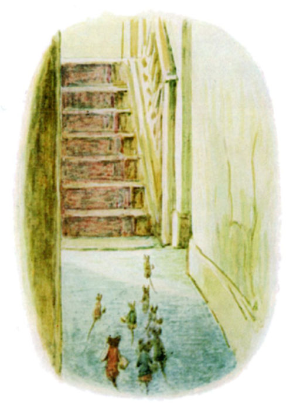
その あくるひも かわらず おんなじでした。 とびきりの あさごはんが でたのです ―― なにしろ いつも ベーコンを たべていたのですから。 ひきかえ かごいりチミーは こんさいや サラダで そだってきました。 まちねずジョニーと そのなかまたちは ゆかしたで うかれさわいで、 よるともなれば あろうことか とびだして いえじゅうを はしゃぎまわるのです。 とくに がしゃんと おおきな ものおとでも すれば それは おちゃの おぼんを てにした セアラが かいだんから すっころんだって ことなので、 そこにある おかしくずやら さとうやら ジャムのしみやらが ねこさえ ものとも しなければ ひろえるって ことでもありますからね。
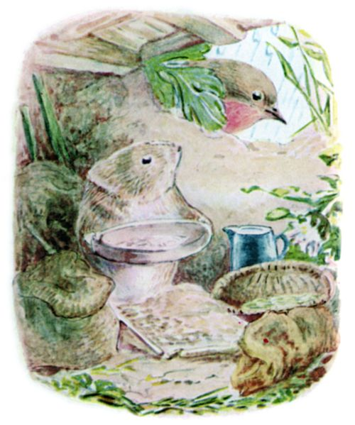
かごいりチミーは ぽかぽか きしべの おちついた わがやへ かえりたくなっていました。 たべものも あいませんし、 うるさくて ねむれませんし。 なんにちか すると、 げっそりしてきたので、 さすがの まちねずジョニーも きづいて、 どうしたのかと たずねます。 そして かごいりチミーの はなしを みみに したあと、 にわのことを あらためて ききます。「はなしでは なんとも さえぬところのようだが。 あめが ふれば なんとする？」
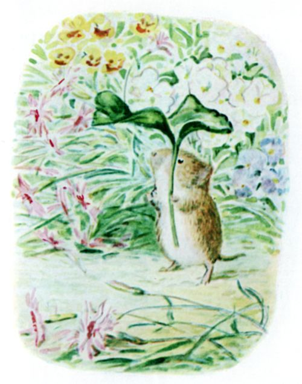
「あめが ふったら、 すなちの かくれこあなで じっとして、 あきに たくわえておいた むぎや みの からを はいだりするんだ。 そとの はらっぱにいる つぐみや くろうたどりを のぞいたり、 あと ともだちの こまどりくんもね。 それに そらが はれたら、 うちの にわとか いちめんの はなとか みられるし ―― ノバラ ナデシコに パンジー ―― しずかなんだ、 とりや はち、 くさちの ひつじの こえが するだけで。」
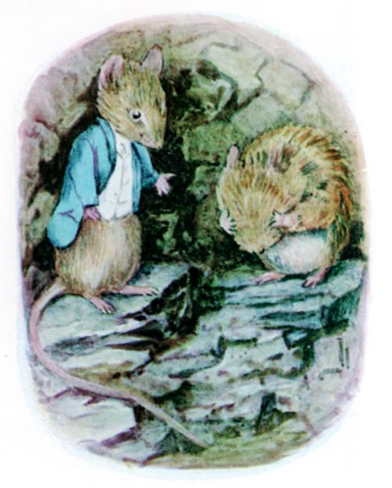
「またしても あのねこが きたか！」と こえを はりあげる まちねずジョニー。 みんなして ちかしつへ にげこんでから、 また はなしの つづき。「しょうじき、 いささか きおちしておる。 きみを もてなそうと つとめたのだがね、 かごいりどの。」
「いえいえいえ、 いままで どうも ごしんせつに。 ただ ぼくの ぐあいが わるいだけで。」と かごいりチミー。
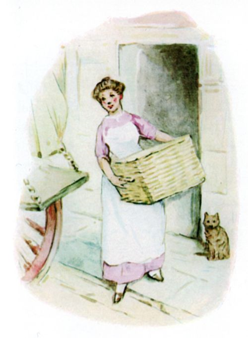
「おそらく われらの しょくじが たべなれぬゆえ、 うまく こなれなかったのだな。 とすると ことによると きみは かごで もどったほうが よいのかもしれぬ。」
「えっ？ えっ！」と かごいりチミーは おおごえを だして。
「そうなのだ、 じつは、 きみを せんしゅうのうちに かえそうとおもえば できたことなのだ。」と ジョニーは ちょっと えらそうに いいながら ――「しらんのかね、 かごは どようになると からのまま もどるのだよ。」
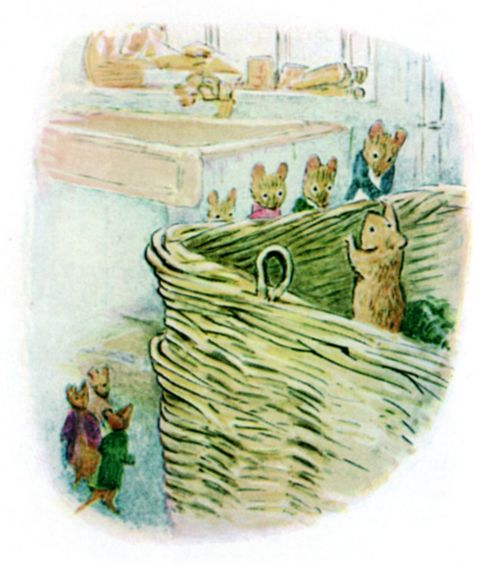
というわけで かごいりチミーは ともだちに なったばかりの ねずみたちに さよならを いって、 ケーキひとかけらと しなびた キャベツ１まいを おみやげに かごのなかへ ひそみました。 そして めいっぱい がたごとしたあと ぶじ もとの にわへ おろされたのです。
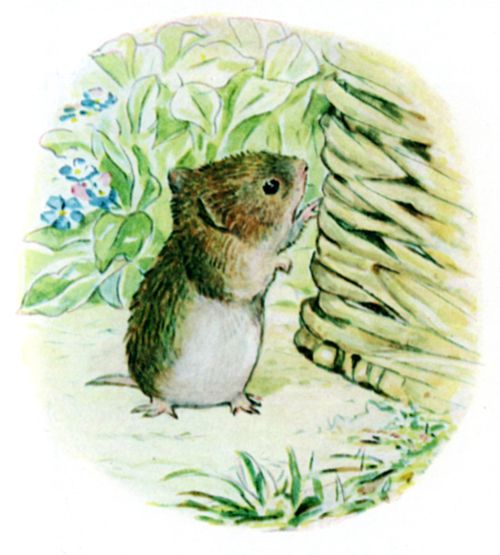
どようになると ときどき いりぐちのわきに おいてある かごを みにいくのですが、 もう わかっているので なかに はいったりしません。 それに だれも でてきませんでしたし。 まちねずジョニー くるみたいなこと いってたんですけどね。
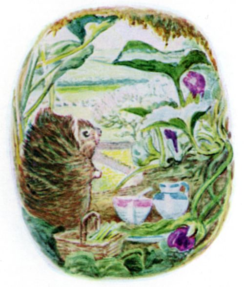
ふゆが すぎて おひさまが もどってくると かごいりチミーは かくれあなの そばに こしかけて、 みじかくて ふわふわの けなみを あたためながら スミレや はるの くさきの かおりを かいでいました。 まちへ いったことも わすれかけていた そのとき、 なんと すなの こみちから みだしなみも よく、 ちゃいろい かわの かばんを てにして やってきたのが、 まちねずジョニー！
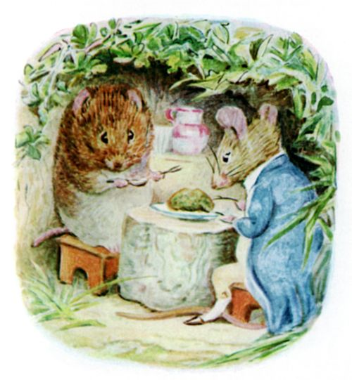
かごいりチミーは りょうてを ひろげて だいかんげい。「いちばん いいじきに きてくれたね。 ハーブの プディングを たべて ひなたぼっこを しようよ。」
「うーむ！ いささか じめじめしておる。」なんていう まちねずジョニーは しっぽを わきに はさんで どろを よけてきていて。
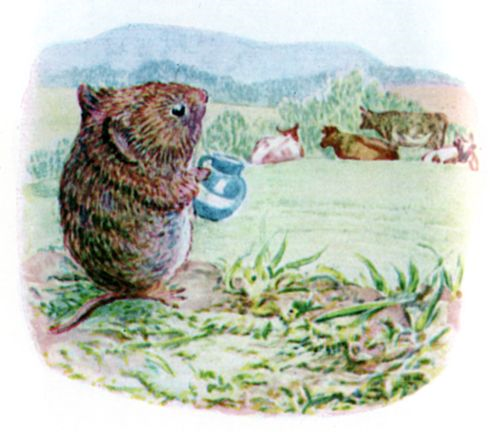
「あの すさまじい おとは なんだね？」と ひどく ぎょっとする まちねずみ。
「あれ？」と かごいりチミー。「あれは ただの うしだよ。 ちょっと ミルクを もらおうっと。 ぜんぜん あぶなくないんだ。 うんわるく からだの したじきにさえ ならなければね。 そっちの みんなは げんき？」
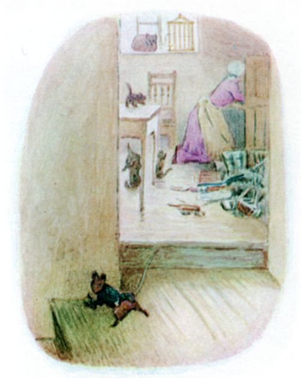
ジョニーの へんじは ぼちぼちと いうところで。 このはるさきに わざわざ きたわけを はなしはじめました。 いえの ひとたちが おまつりで はまべに でかけているので、 すいりがかりが てあてを もらって はるの おおそうじをしているらしく。 ねずみたいじも とくべつ おおせつかってるみたいで。 それに こねこが ４ひきも うまれて、 おまけに おやねこが カナリアを おそってしまって。
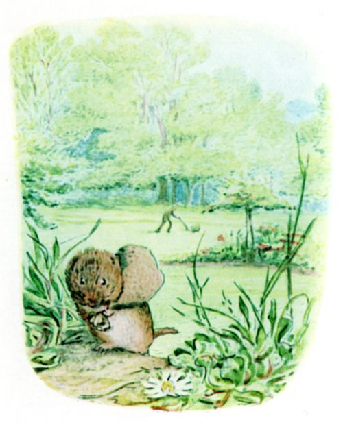
「あやつらは われらの しわざと いうが、 わがはい そんなバカは しない。」と まちねずジョニー。「いったい なにごとか、 あの すさまじい さわぎは。」
「ただの しばかりきだよ。 ちょっと くさの はぎれを とってくるから、 すぐに きみの ベッドを こしらえるね。 きっと このいなかで ゆっくりしたほうが いいんだよ、 ジョニさん。」
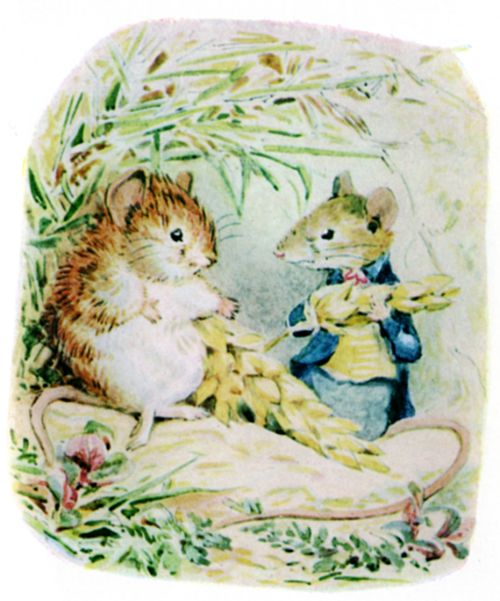
「うーむ ―― ７かごの かようびまで ようすを みるとするか。 かごは とまっておるからな。 あやつらが はまべに おるあいだは。」
「きっと もう まちに すみたくなくなるよ。」と かごいりチミーは いいました。
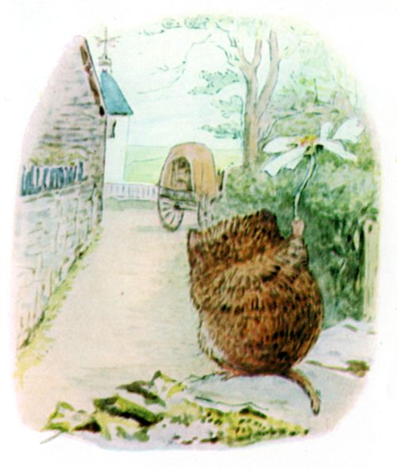
ところが そうはならず。 そのつぎの やさいかごで かえっていきました。 なんでも しずかすぎたのだとか

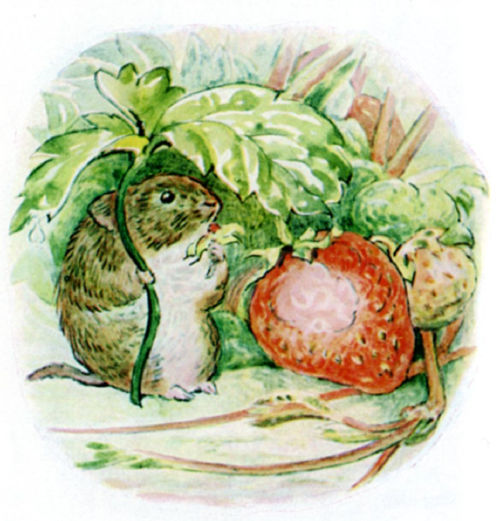
ひとによって それぞれ すみよいところは ちがうものです。 わたしとしては、 いなかに すむほうが すきですけどね、 かごいりチミーみたいに。
（おしまい）